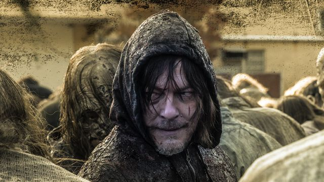
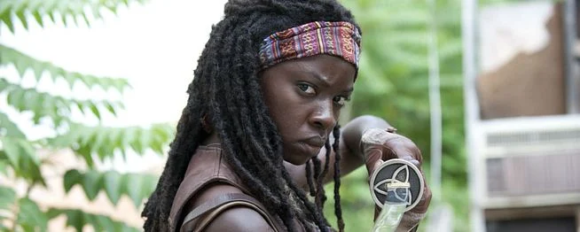
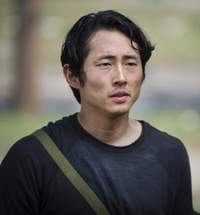

The Walking Dead
The Walking Dead é uma das séries mais marcantes da televisão moderna, baseada na série de quadrinhos criada por Robert Kirkman, em parceria com Tony Moore e Charlie Adlard. A adaptação para a TV foi desenvolvida por Frank Darabont e estreou em 2010 pelo canal AMC. Ao longo de mais de uma década, a série conquistou milhões de fãs ao redor do mundo e se tornou um fenômeno cultural dentro do gênero pós-apocalíptico.
O Início do Apocalipse
A história começa com o policial Rick Grimes, que acorda de um coma em um hospital abandonado e descobre que o mundo foi devastado por um surto misterioso que transforma os mortos em zumbis — chamados na série de “walkers”.
Sem entender completamente o que aconteceu, Rick parte em busca de sua esposa, Lori, e de seu filho, Carl. Ao reencontrá-los, ele assume naturalmente a liderança de um grupo de sobreviventes que precisa enfrentar não apenas os mortos, mas também os perigos representados pelos próprios humanos.
Personagens Icônicos
Ao longo das temporadas, diversos personagens se tornaram símbolos da série:
Daryl Dixon

Um caçador habilidoso, conhecido por sua besta e personalidade reservada.
Michonne

Guerreira silenciosa que carrega uma katana e dois zumbis acorrentados.
Glenn Rhee

Jovem corajoso e leal, especialista em missões arriscadas.
Negan

Um dos vilões mais marcantes, líder dos Salvadores, conhecido por sua arma “Lucille”.
Temas Principais
Apesar de ser conhecida pelos zumbis e cenas de ação, The Walking Dead é, acima de tudo, uma história sobre:
- Sobrevivência
- Moralidade em situações extremas
- Liderança
- Conflitos sociais
- Esperança em meio ao caos
A série levanta uma pergunta central: quem são os verdadeiros monstros — os mortos ou os vivos?
Comunidades e Conflitos
Com o tempo, o grupo encontra diferentes comunidades, como:
- A prisão
- Alexandria
- Hilltop
- O Reino
Esses locais representam tentativas de reconstrução da sociedade, cada uma com suas próprias regras e estruturas políticas. Entretanto, novos grupos hostis surgem constantemente, gerando guerras e alianças estratégicas.
Expansão do Universo
O sucesso da série principal deu origem a um universo expandido, incluindo:
- Fear the Walking Dead
- The Walking Dead: World Beyond
- The Walking Dead: Dead City
- The Walking Dead: Daryl Dixon
Essas produções exploram novas regiões, personagens e perspectivas sobre o apocalipse.
Impacto Cultural
Durante seu auge, The Walking Dead foi uma das séries mais assistidas da televisão a cabo. Além disso, influenciou jogos, livros, produtos licenciados e eventos temáticos. A franquia também ajudou a revitalizar o gênero zumbi na cultura pop moderna.
Temporadas e Evolução
A série principal contou com 11 temporadas, apresentando uma evolução significativa:
- Sobrevivência básica e fuga constante
- Formação de comunidades
- Conflitos organizados e guerras
- Reconstrução e novas ameaças
O tom da narrativa se torna mais político e estratégico com o passar do tempo, mostrando como a sociedade pode renascer mesmo após a destruição total.
Conclusão
The Walking Dead vai além de uma simples história de zumbis. É um estudo sobre a natureza humana quando todas as estruturas sociais colapsam. A série demonstra que, mesmo em um mundo devastado, ainda há espaço para amizade, amor, sacrifício e esperança.
Seja pelos personagens marcantes, pelos conflitos intensos ou pela reflexão filosófica sobre a humanidade, The Walking Dead permanece como uma das produções mais influentes do século XXI.